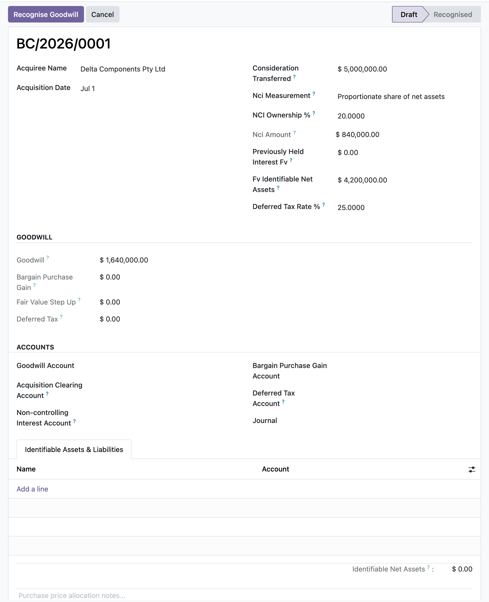

Compute goodwill the IFRS 3 way, post a balanced purchase price allocation, and roll investments in associates and joint ventures forward under the IAS 28 equity method, all inside Odoo 17 Community.
Enter consideration, non-controlling interest, any previously-held interest, and the fair value of net assets, and the goodwill is the standard's arithmetic. A negative result flips automatically to a bargain purchase gain recognised in profit or loss.
List identifiable assets and liabilities at fair value on lines and post a single balanced move that debits each asset, credits each liability, raises deferred tax on the step-up, books goodwill, and credits consideration and non-controlling interest.
Carry an associate or joint venture at cost, then pick up your share of profit, record dividends as a reduction not income, impair, and dispose, each as its own balanced entry that updates the carrying amount and the cumulative totals.
An acquisition closes. You open a business combination record, enter the consideration transferred, set non-controlling interest at fair value or let the proportionate basis measure it from the net assets, and add each identifiable asset and liability at its fair value with a tax base. The goodwill, the fair-value step-up, and the deferred tax all compute as you type. As an Accounting Manager you post the purchase price allocation: one balanced entry books the assets, liabilities, deferred tax, goodwill, consideration, and non-controlling interest, and the record locks so it cannot be edited out from under its move. Later, for an associate you hold, you activate the investment at cost and each period pick up your share of its profit, record the dividend it pays, and if needed impair it, watching the carrying amount roll forward.
In the shipped code today, each one a place where a cheaper module silently does the wrong thing.
When your share of an associate's loss would take the carrying amount below zero, only the loss that brings it to nil is recognised and it is floored there, rather than driving the investment negative.
A dividend from an associate is posted as a reduction of the carrying amount, not as income, which is what the equity method requires and what a naive receipt entry gets wrong.
Deferred tax on the fair-value step-up feeds back into goodwill: a taxable difference raises a deferred tax liability and increases goodwill, a deductible one lowers it, so the goodwill and the allocation entry stay consistent.
Once a combination is recognised its consideration, non-controlling interest, dates, accounts, and asset lines are locked, and its identifiable asset lines cannot be changed or deleted, so a posted acquisition cannot be retro-edited.
A missing goodwill, gain, investment, share-of-profit, cash, impairment, or disposal account, a missing journal, or an invalid state each raises a clear message instead of posting a broken or unbalanced entry.
odoo 19 goodwill, IFRS 3 business combination odoo, purchase price allocation odoo, bargain purchase gain, non-controlling interest fair value, IAS 28 equity method odoo, investment in associate accounting, joint venture equity method, share of profit pickup, deferred tax on acquisition IAS 12, step acquisition previously held interest, goodwill journal entry odoo community

Business combination, goodwill and NCIAn IFRS 3 acquisition measuring goodwill as consideration plus non-controlling interest less the fair value of identifiable net assets, with deferred tax on the fair-value step-ups.
Premium ERP Heritage modules that extend the same stack, each built to the same engineering bar.
End to end French B2B and B2G electronic invoicing for the DGFiP reform, generating Factur-X PDF/A-3 with embedde...
Accept ZainCash wallet payments in Iraq at your Odoo checkout, on the ZainCash Payment Gateway v2 with OAuth2, re...
Sync Employment Hero ATS recruitment job openings into the standard Odoo Recruitment app, mapping each opening on...
The New Zealand country pack for the ERP Heritage Employment Hero integration
A reusable two way synchronisation engine that keeps Odoo in step with the people and payroll platform, idempoten...